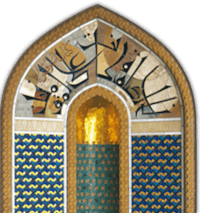
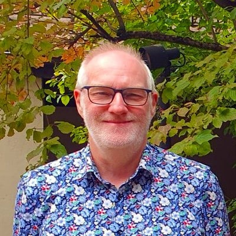

International Resonance



“It is good that this exhibition can highlight the vital importance of religious freedom in a world where such freedom is so often not respected.”
“It is also good that the positive resources of the Ibadhi school of Islam and the tolerant traditions of the Sultanate of Oman in particular are given more prominence. I trust that the exhibition will provide a space in which mutual sharing and learning can take place.”
Excerpt from the message to the audience at St. Philip’s Centre in Leicester from the Archbishop of Canterbury, the Most Revd. Rowan Williams., 16 July 2012.

“Exhibitions like this one help to shed light on the diversity of the world’s peoples. It helps to learn just a little bit more about the cultures of The Other, thus progressively moving all towards a rapprochement of cultures.”
“The inter-connected themes of ‘tolerance,’ ‘understanding,’ and ‘coexistence’ are the building blocks of a true culture of peace, based on a commitment to the universal principles of human dignity and mutual solidarity. This exhibition is an international project that is being shown for the first time here at UNESCO headquarters, and we are truly honoured to host such a fine event.”
H. E. Mr Mohamed Sameh Amr, Chairperson of the Executive Board of UNESCO and Ambassador and Permanent Delegate of the Arab Republic of Egypt to UNESCO on the occasion of the inauguration of the exhibition at UNESCO Headquarters in Paris, 7 October 2015.


“It is critical that we harness and learn from the best regional and national examples of inclusive outreach -- I am sure that this exhibition will nurture our determinations to pursue a more peaceful and just world.”
Mrs Nadha Al-Nashif, UNESCO Assistant Director-General for Social and Human Sciences on the occasion of the inauguration of the exhibition at UNESCO Headquarters in Paris, 7 October 2015.


“The exhibition comes at a very important time, as violence and extremism prevail throughout the world, confirming the need for tolerance, understanding and coexistence.”
H. E. Dr George Vella, the current president of the Republic of Malta, on the occasion of the inauguration of the exhibition in Valetta, 24 October 2014.


“Email or text messages can be used to exchange information, but to understand someone requires personal contact, personal encounters, conversations eye to eye. Some of you have come a long way to be here, specifically for the personal dialogue, for the mutual exchange. Achieving mutual understanding might be enabled through an argument with someone, resulting in agreement.”
“This exhibition opens a dialogue, enables inquiries, creates a meeting point which encourages direct communication. It stimulates discussions which are worth having, and it opens new perspectives for us on the religion of Islam and our life together, whether global or local. It is an important stone on the path to the future, which begins here today.”
Dipl.Theol. Meinrad Hörwick, Catholic Church School Board, Augsburg Diocese on the occasion of the inauguration at Vocational School No. 5 in Augsburg July 04, 2011.